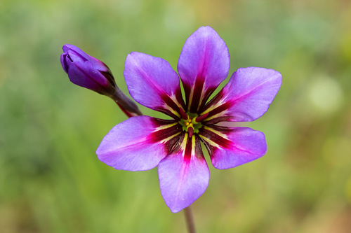

zona centro
orquídea – chloraea multiflora lindl

¿listos para descubrir la flora chilena?
floris
En 'floris' podras descubrir
distintas flores chilenas que
se encuentran a lo largo del país
norte grande
el palo del jote - gypothomnium pinifolium
norte chico
cebollín purpura – leucocoryne purpurea gay
pata de guanaco – cistanthe grandiflora
añañuca – rhodophiala rhodolirion
zona centro
orquídea – chloraea multiflora lindl
zona sur
chupalla – fascicularia bicolor
guindo santo – eucryphia glutinosa
zona austral
taique – desfontainia spinosa